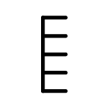
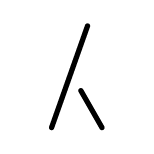
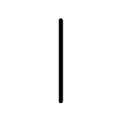
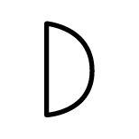
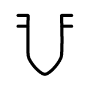
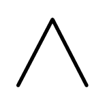

Open Indus, lettered with the script's strokes
Latin capitals drawn by hand as single even-weight strokes, the way signs are cut into a seal. Each letter borrows one construction from a real sign drawing. They are Latin letters wearing the script's stroke logic, not Indus signs standing in for sounds. Three strengths, ranked; the fish mark is the one from the live site, drawn at the same stroke weight.
Where each letter comes from
 O ← M373the pointed almond, as in the fish body
O ← M373the pointed almond, as in the fish body P ← M59half of the fish head, cut apart from the stem
P ← M59half of the fish head, cut apart from the stem
E ← M176a stem with short strokes beside it
N ← M124a diagonal meeting a stroke at a point
I ← M86one even stroke
D ← M304a stem and an almond-half bowl
U ← M342the jar: pointed base and rim ticks S ← M119a stroke with two turns, end to end
S ← M119a stroke with two turns, end to end R ← M125P with a forked leg
R ← M125P with a forked leg
A ← M134the chevron
Medium · separate cuts
Each stroke is its own cut and stops short of the next, the way strokes sit in the sign drawings. Almond O, almond-half bowls, the jar U with one rim tick a side. Recommended.
Header · 20 px cap height
64 px
200 px (shrinks to fit narrow screens)
Header · 20 px cap height
64 px
200 px (shrinks to fit narrow screens)
Files: lockup · word only · Read Indus


Subtle · a clean sans
A narrow geometric sans with continuous strokes. Only the almond O and D and the jar's rim ticks on U come from the script.
Header · 20 px cap height
64 px
200 px (shrinks to fit narrow screens)
Header · 20 px cap height
64 px
200 px (shrinks to fit narrow screens)
Files: lockup · word only · Read Indus


Bold · strongly sign-like
The fish body for O (two arcs that cross at the foot), the jar U with two ticks a side, an angular S and an A whose legs cross and run on. Most character, least calm at small sizes.
Header · 20 px cap height
64 px
200 px (shrinks to fit narrow screens)
Header · 20 px cap height
64 px
200 px (shrinks to fit narrow screens)
Files: lockup · word only · Read Indus


Read Indus
The two extra letters are R (the P bowl with a cut leg) and A (the chevron with a cut bar). Drawn in all three studies; shown here in the recommended one.
If the name becomes Read Indus · medium study, 64 px
200 px
If the name becomes Read Indus · medium study, 64 px
200 px